电子圣诞树
今天给大家带来DIY简易LED圣诞树。大家可以着手试试哟！ 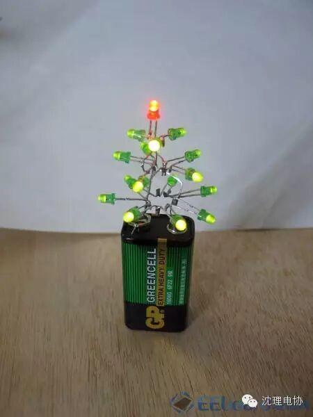 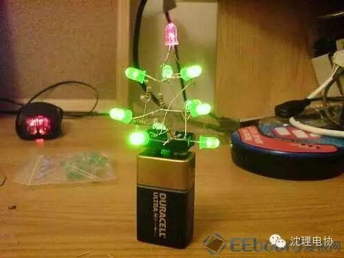 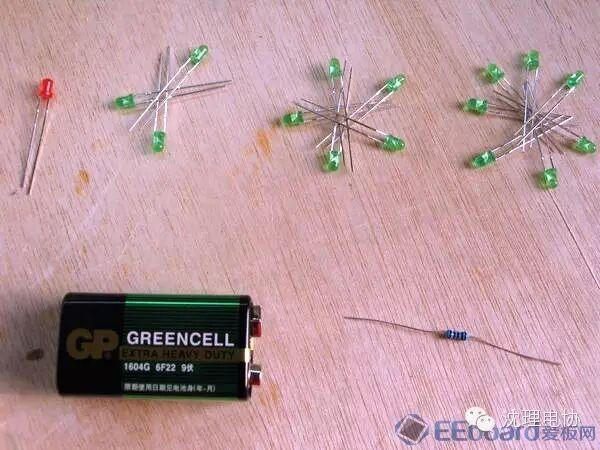 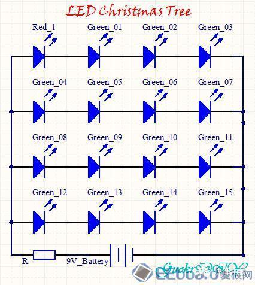 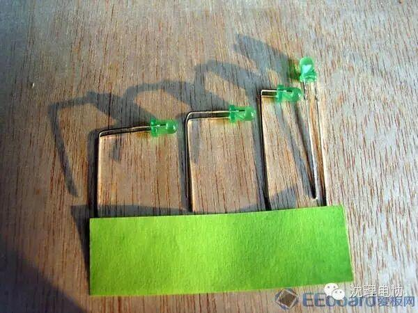 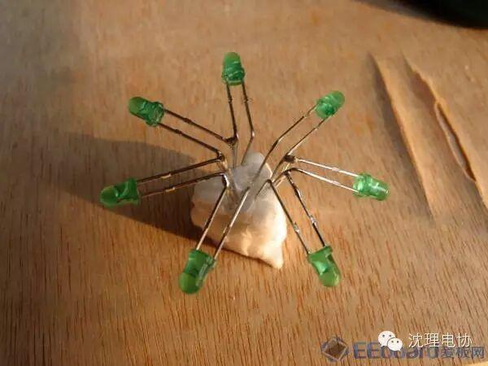 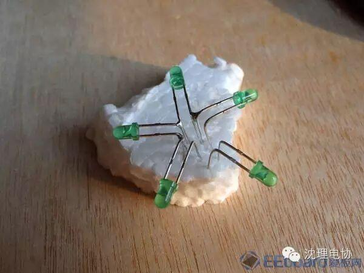 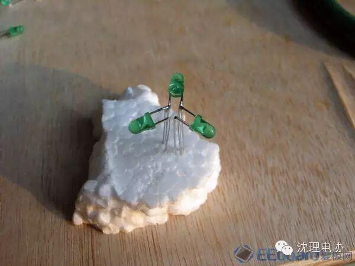 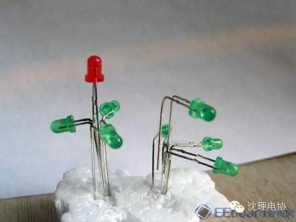 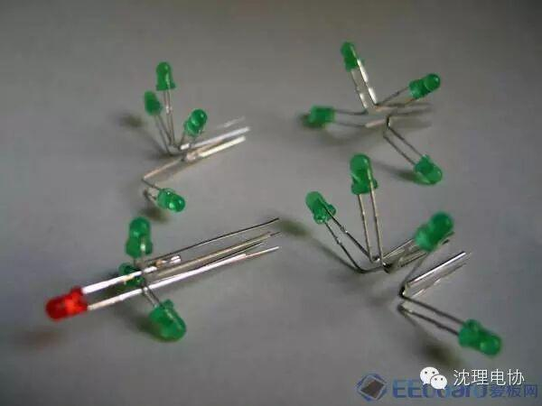 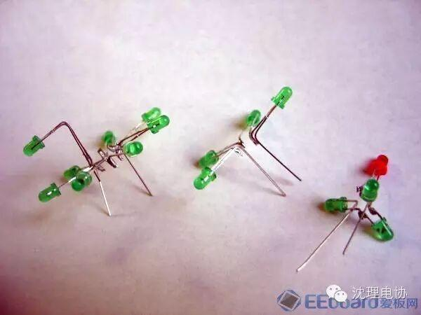 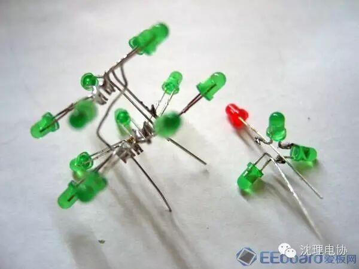 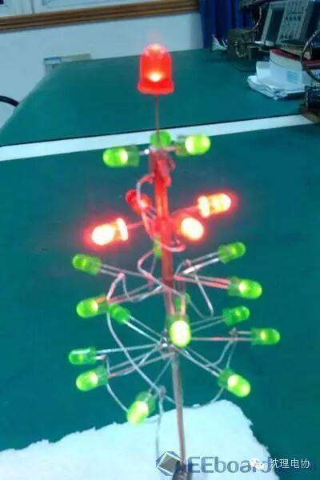
1 工具和材料
电烙铁
● 斜嘴钳
● 镊子（可选，推荐）
● 万用表（可选）
○ 红色LED 1个
○ 绿色LED 15个（3个一堆、5个一堆、7个一堆）
○ 焊锡丝
○ 9V电池（方形的那种，还是很容易找到的）
○ 100Ω电阻（可选）
2 原理图
够简单吧：4个串联的LED为一组，4组同时并联到电池的两极即可。电池左边的电阻起保护LED的作用。
实测点亮一个图中的LED小灯最少需要1.6V的电压，承受2.1V电压时都还能正常发光。新的9V碳性电池输出电压为10V，理论上每个小灯承受2.5V电压。但实际上在电池上并联了4组LED之后，新电池的工作电压下降到了8.6V,所以平摊到每个LED上也就2.1V左右。
3 制作圣诞树的每一层按照电路图，16个LED按如下方法分为四组，每组内部小灯串联，组与组之间并联，同时和电源并联。
把绿色的LED管脚弯成3种不同的形状，从左到右依次为：第四层（7个）、第三层（5个）、第二层（3个）以及第一层（1个，应为红色LED），然后用烙铁按照4个一组把LED串联焊接起来。
PS：LED是有正负极的，不要接反了
第四层为绿色LED09~15，其中12~15为一组，09~11和第三层的08合为一组。注意中间是分开的，左边四个连在一起，右边3个连在一起
第三层为绿色LED04~08，其中04~07为一组。注意有一个LED和其他四个是分开的
第二层，注意3个LED虽然排成了一个三角形，但实际上没有相互连结，是有一个正极一个负极的
将红色LED焊接到第二层上，将第三层的08焊接到第四层的09~11上。
现在一共得到了4组串联的LED
4 让圣诞树长大吧将刚才得到的4组串联LED并联起来即可。
第四层完成
第三层和第四层完成
整体完成。注意将第一层和第二层加上以后，你还需要给圣诞树做一个“树根”来让它稳定地立在电池上（本来就有一个正极一个负极，再随便加一只脚就稳定了）。为了保护LED灯，可以在圣诞树的正极和电池的正极之间加上一段100欧姆的电阻。
欢迎小伙伴儿们围观，更欢迎小伙伴儿们晒出比这个更完美的圣诞树
关注沈理电协（微信：sylgdzxh）
每一次转发和分享都是对我们的肯定。